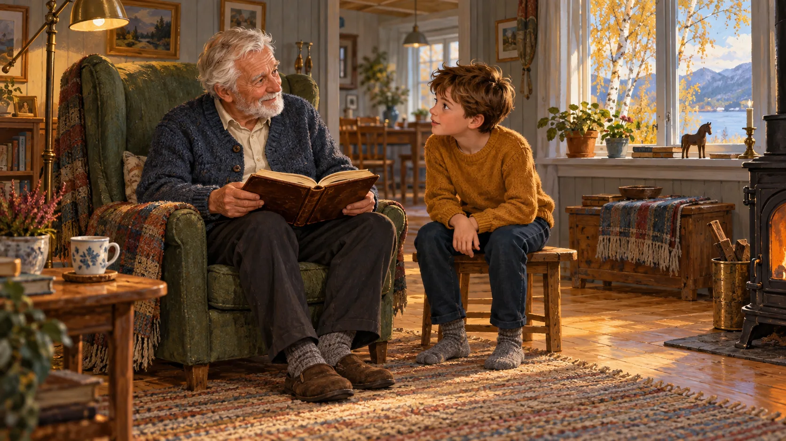

REISEN MED LUKAS · FOR LEDERE
Lederveiledning
For trosopplærere, søndagsskoleledere og lærere som vil gi familiene en adventsreise å spille hjemme.

Hva er Reisen med Lukas?
Reisen med Lukas er et adventsspill for barn fra 8 til 12 år. Barnet blir medhjelper for Lukas, som samler vitneutsagn om Jesus før han skriver evangeliet sitt (Luk 1,1–4). Hver dag fra 1. desember til julaften åpner en ny luke. Bak hver luke er et malt brett der barnet går rundt, snakker med folk, finner spor og fyller vitneboka.
Hovedoppdraget tar omtrent fem minutter. Med de valgfrie sakene og småspillene tar en luke 10–15 minutter. Første og siste luke er litt lengre. Fortellingen følger Lukas 1–2 og Matteus 2, fra presten Sakarja i templet til julenatten, Simeon og Anna, Johannes døperen og fram til påskemorgen. Julaften forsegler Lukas rullen og sender den til Teofilos.
Den faglige linjen
- Bibelen er troverdig og Guds ord til mennesker. Spillet bygger på klassisk kristen tro, den troen kirkesamfunnene har felles. Der kirkesamfunnene er uenige, for eksempel om dåp, nattverd og kirkesyn, tar spillet ikke stilling.
- Barnet prøver vitnene selv. Vitner sammenlignes, spor samles, og barnet velger den forklaringen som passer best med sporene, slik en etterforsker gjør. Fagstoffet ligger i oppgavene, ikke i lange forklaringer.
- Ærlig om hva vi vet. Spillet bygger tillit til Bibelen og viser samtidig at det historiske grunnlaget er sterkere noen steder enn andre, og at noe er omstridt. Et spørsmål uten svar betyr ikke at noe er usant.
- Det som er diktet, holdes atskilt. Mange personer og samtaler er laget til spillet. Hver luke har et kort som heter «Hva er diktet i dag?», og bibeltekstene er gjenfortalt med henvisning til kapittel og vers. Hvert kort er merket 🎭 når det er diktet til spillet, og 📜 når det gjenforteller Bibelen, en annen gammel tekst eller et funn.
Lukas’ fire spørsmål
Dette er grepet barna øver på hele desember. Bruk spørsmålene i samtalene, så får barna et felles språk.
- Så de det selv?
- Sier flere det samme?
- Ble det fortalt tidlig?
- Passer det med alt?
Slik bruker familiene spillet
Hver familie får sin egen kode fra dere og spiller hjemme, én luke om dagen. Luke 1 er gratis hele året. De andre åpner på sin dag i desember, og taster familien inn koden midt i desember, er lukene fram til den dagen åpne med en gang. En åpnet luke blir stående åpen, og etter julaften er alle åpne. Send gjerne samtalespørsmålene under hjem. Aktivitetsark til utskrift, to A4-sider til hver dag, ligger på [domene]/aktiviteter/.
Samtalespørsmål for hver dag
Spørsmålene passer etter at barnet har spilt dagens luke. De har ingen fasit. Det viktigste er at barnet får sette ord på det det har funnet. Svarer barnet noe dere ikke ventet, spør: «Hvordan fant du ut det?»
- 1
Uhellet på torget
- Hvem ville du helst spørre om hva som skjedde på torget: en som så det selv, eller en som bare hadde hørt om det? Hvorfor?
- Lukas skriver at han undersøkte alt nøye. Hvordan kan du finne ut om noe en venn forteller, stemmer?
- 2
Presten i templet
- Folket utenfor templet så at Sakarja ikke kunne snakke da han kom ut. Hva kunne de ikke vite om det som skjedde der inne?
- Hvem kunne ha fortalt det videre?
- 3
Den stumme presten
- Lukas forteller at presten Sakarja ikke trodde på engelen og ble stum. Hvorfor ville noen fortelle noe som gjør en kjent prest litt flau, hvis det ikke var sant?
- Hvordan fikk barnet navnet Johannes?
- 4
En by ingen regnet med
- Nasaret var en liten by som ingen regnet med. Hvis du skulle dikte opp en fortelling om en konge, ville du latt ham vokse opp der?
- Maria spurte engelen: «Hvordan skal dette skje?» Hva tenker du om at hun stilte spørsmål?
- 5
Det Maria gjemte i hjertet
- Lukas skriver at Maria tok vare på alt hun opplevde, og tenkte på det. Hvem kunne hun ha fortalt det til, og hvordan kunne det nå fram til Lukas?
- Vi vet ikke nøyaktig hvordan Lukas fikk vite det. Hva er forskjellen på at noe er mulig, og at det er sikkert?
- 6
Marias sang
- Marias sang ligner Hannas sang i Det gamle testamentet. Hvem er det Gud hjelper i begge sangene?
- En sang leses ikke på samme måte som en nyhetsmelding. Hva er forskjellen?
- 7
Keiserens befaling
- Lukas nevner keiser Augustus og Kvirinius. Hvorfor er det nyttig at en forfatter nevner navn som kan sjekkes i andre kilder?
- Forskerne er ikke enige om nøyaktig når innskrivingen var. Betyr et åpent spørsmål at fortellingen er feil?
- 8
Veien til Betlehem
- Teksten sier at Josef og Maria dro fra Nasaret til Betlehem, men ikke hvilken vei de gikk. Hva gjør vi når en tekst ikke forteller alt?
- I Bibelen går man «opp» til Jerusalem og «ned» til Jeriko. Hvordan kan et kart hjelpe oss å sjekke en gammel tekst?
- 9
Natten i Betlehem
- To vitner forteller om samme krybbe, men sier ulikt om hvor mange gjetere det var. Betyr det at en av dem lyver? Hva er de enige om?
- Hvorfor husker folk ofte litt ulikt, selv når de har sett det samme?
- 10
Gjesterommet og krybben
- Hva står det faktisk i teksten om krybben og rommet, og hva har vi lagt til selv i krybbespill og på julekort?
- Hvorfor er det lurt å lese ordene nøye før vi tegner hvordan det så ut?
- 11
Gjeterne og englene
- Englene kom til noen gjetere ute på marka om natten, ikke til folk i et palass. Hva tenker du om det?
- Hva gjorde gjeterne etter at de hadde funnet barnet?
- 12
Tre titler
- Engelen kalte barnet Frelser, Messias og Herre. Hva betyr de tre ordene?
- Folk ventet ulike ting av Messias. Hva tror du de håpet på?
- 13
To fortellinger
- Matteus forteller om vismennene, Lukas om gjeterne. Er det en motsigelse, eller kan begge deler ha skjedd?
- Hvorfor kan to som skriver om det samme, velge å fortelle ulike ting?
- 14
Simeon i templet
- Josef og Maria ofret to duer. Ifølge loven var det offeret for dem som ikke hadde råd til et lam (3 Mos 12,8). Hva forteller den lille detaljen om familien?
- Simeon hadde ventet lenge. Hva sa han da han fikk se barnet?
- 15
Anna og kvinnene
- På den tiden ble kvinner ofte ikke regnet som like gode vitner som menn. Likevel forteller Lukas om Anna, som fortalte om barnet til alle som ventet. Hva tenker du om det?
- Lukas forteller ofte om en mann og en kvinne side om side, som Simeon og Anna. Hvorfor tror du han gjør det?
- 16
Tolv år i templet
- Lukas forteller bare én historie fra Jesu barndom. Senere skrev noen fantastiske fortellinger om gutten Jesus. Hvorfor kan det være et godt tegn at Lukas sier så lite?
- Hva gjorde Jesus da foreldrene fant ham i templet?
- 17
Johannes ved Jordan
- Lukas forteller hvem som styrte da Johannes begynte å preke, med sju navn. Hvorfor gjør en historiker det?
- Josefus, en jødisk historiker som ikke var kristen, skrev også om Johannes døperen. Hva betyr det at en kilde utenfor Bibelen nevner den samme personen?
- 18
Hva folk ventet seg
- I synagogen i Nasaret leste Jesus fra profeten Jesaja om godt nytt for fattige, frihet for fanger og syn for blinde. Hva håpet folk at Messias skulle gjøre?
- Hvorfor tror du det var vanskelig for folk i hjembyen å tro på ham?
- 19
Uenige i templet
- Både Lukas og historikeren Josefus forteller at saddukeerne ikke trodde at de døde skal stå opp. Hvorfor er det nyttig når to kilder sier det samme?
- Er det det samme at én detalj stemmer, og at hele fortellingen er bevist? Hvorfor ikke?
- 20
Lukas og Matteus side om side
- Hva er likt i Lukas’ og Matteus’ fortellinger om Jesu fødsel?
- Hvis to venner skrev om den samme klasseturen, ville de skrevet helt likt? Hva ville gjort deg mest mistenksom: at de skrev ord for ord likt, eller litt ulikt?
- 21
Avskriftene
- Prøv å skrive av en setning for hånd. Hvilke feil er lette å gjøre?
- Hvis tre kopier har den samme feilen, kan de være kopiert fra hverandre. Hvorfor er det ikke nok å telle kopiene?
- 22
Lys for flere folk
- Kornelius var romersk offiser og ikke jøde. Hva skjedde da Peter besøkte ham?
- Simeon kalte Jesus et lys for folkene. Hvordan ser vi det i fortellingen om Kornelius?
- 23
En Messias som dør?
- Ingen ventet at Messias skulle dø. Hvorfor ville vennene til Jesus fortelle noe som var så vanskelig å forklare, hvis det ikke hadde skjedd?
- Paulus skrev at han ga videre det han selv hadde fått: at Jesus døde, ble begravet og sto opp igjen. Hvorfor er det viktig at dette ble fortalt mens øyenvitnene levde?
- 24
Rullen forsegles
- Gå gjennom Lukas’ fire spørsmål sammen. Hvilken luke husker du best, og hvilket spørsmål hjalp deg der?
- Lukas skrev for at Teofilos skulle vite at det han hadde lært, var til å stole på. Hva tenker du selv nå?
Praktisk
Kodene
Hver familie får en egen kode på en klippelapp. Koden ser slik ut: XXXX-XXXX. Den låser opp hele reisen, alle 24 lukene, på enheten der den tastes inn. Slik gjør en voksen hjemme:
- Åpne spillet på [domene] og trykk «For voksne» på startsiden.
- Hold knappen inne i tre sekunder, skriv koden og trykk «Lås opp».
Det trengs nett når koden tastes inn. Del ut lappene i en konvolutt merket «Til en voksen hjemme», eller gi dem til foreldrene når barna hentes. Dere kan gjerne dele dem ut før desember: luke 1 kan spilles med en gang, og de andre åpner på sin dag. Ta vare på kodearket med lappene som er igjen til etter jul. Da kan dere gi en ny lapp hvis noen mister sin.
Framgangen lagres på barnets enhet
Spillet kjører i nettleseren på telefon, nettbrett og PC, og ingenting må installeres. Framgangen lagres på enheten barnet spiller på. Søsken som deler enhet, deler også framgangen. Det fungerer fint når de spiller sammen. Slettes nettleserdataene, forsvinner framgangen og opplåsingen. Da kan koden tastes inn på nytt. Etter første gang kan spillet brukes uten nett på samme enhet.
Personvern
Spillet har ingen konto, ingen innlogging, ingen reklame, ingen sporing og ingen analyseverktøy. Det eneste spillet sender, er koden når den tastes inn. Kontrolltjenesten svarer om koden er gyldig, og lagrer verken koden eller hvem som brukte den. Dere trenger ikke samle inn opplysninger om barna for å dele ut kodene. Les mer i personvernerklæringen på [domene]/personvern.html.
Melding dere kan sende foreldrene
Hei! I advent gir vi barna adventsspillet Reisen med Lukas. Barnet hjelper Lukas med å samle vitneutsagn om Jesus, én luke om dagen fra 1. desember til julaften, 5–15 minutter om dagen.
På lappen barnet har med hjem, står en kode som låser opp alle 24 lukene. Åpne [domene], trykk «For voksne», hold inne i tre sekunder, skriv koden og trykk «Lås opp». Luke 1 kan spilles med en gang, og de andre lukene åpner på sin dag i desember fram til julaften.
Spillet har ingen reklame og ingen konto, og framgangen lagres bare på enheten. Aktivitetsark til utskrift finner dere på [domene]/aktiviteter/.
Hilsen [navn]
Kontakt
Har dere spørsmål, eller trenger dere flere koder? Ta kontakt: [kontakt]